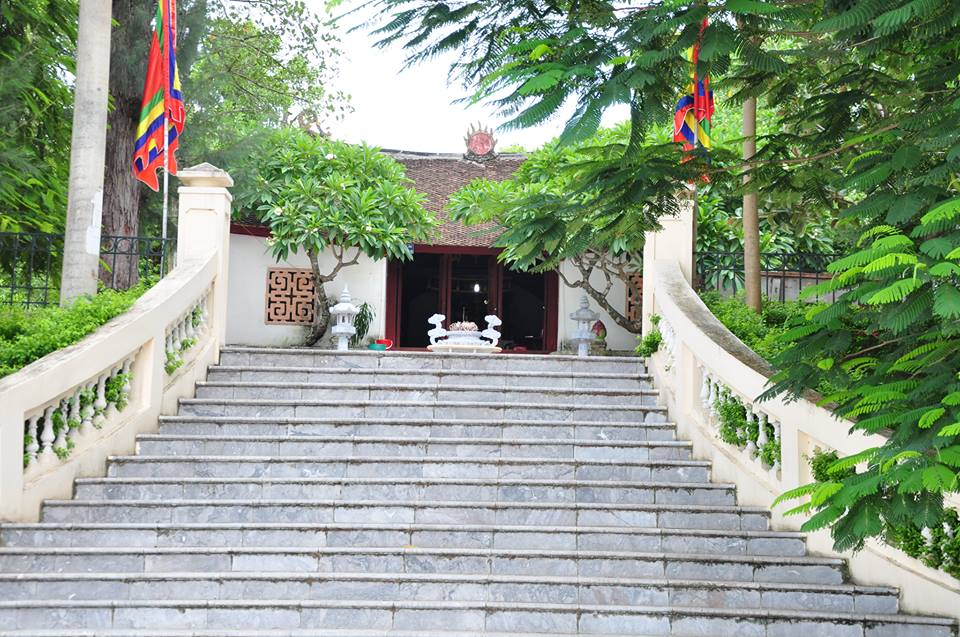
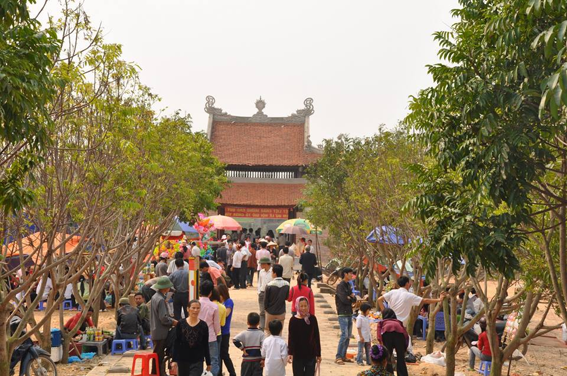
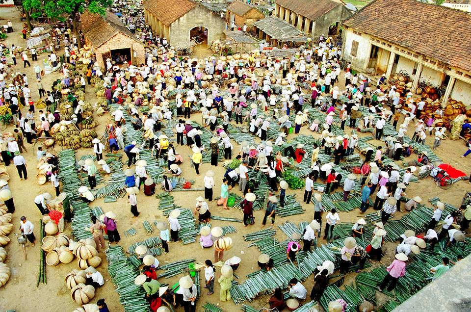
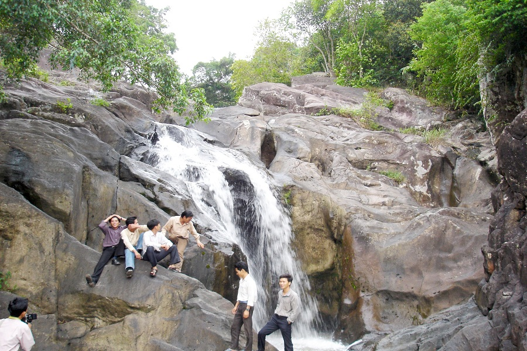
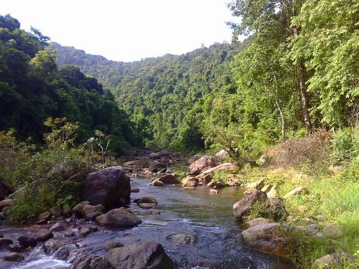

TIỀM NĂNG DU LỊCH
Là một tỉnh miền núi nằm ở phía Đông Bắc của Tổ quốc Việt Nam, Bắc Giang có diện tích tự nhiên 3.827 km² với hơn 20 dân tộc anh em sinh sống ở 10 huyện, thành phố. Bắc Giang có phía Đông giáp tỉnh Quảng Ninh, phía Bắc giáp tỉnh Lạng Sơn, phía Tây giáp tỉnh Thái Nguyên và Hà Nội, phía Nam giáp tỉnh Bắc Ninh và tỉnh Hải Dương. Bắc Giang có hệ thống giao thông thuận lợi với đường bộ, đường sắt, đường thuỷ tới thủ đô Hà Nội, sân bay quốc tế Nội Bài, cảng biển quốc tế Hải Phòng... Bắc Giang là vùng đất cổ còn lưu giữ trong mình những trầm tích văn hóa vô cùng phong phú và giàu có. Đặc biệt nơi đây còn được thiên nhiên ban tặng những thắng cảnh thiên nhiên tuyệt đẹp. Đó là điều kiện thuận lợi để du lịch Bắc Giang liên kết phát triển.
Tài nguyên du lịch văn hóa
Tính đến năm 2016, Bắc Giang có 2.237 di tích, trong đó có 24 di tích được xếp hạng cấp Quốc gia đặc biệt và 99 di tích cấp Quốc gia; 567 di tích được xếp hạng cấp tỉnh, 615 đình, chùa, đền; 15 di tích lịch sử cách mạng, tiêu biểu như: thành cổ Xương Giang, nơi gắn liền với trận quyết chiến chiến lược tiêu diệt 10 vạn quân Minh (thế kỷ 15), di tích thành cổ nhà Mạc (thế kỷ 16 - 17); đặc biệt tỉnh có 2 di tích quốc gia đặc biệt bao gồm: di tích Những điểm khởi nghĩa nông dân Yên Thế - nơi diễn ra cuộc khởi nghĩa của nông dân Yên Thế chống lại thực dân Pháp do người anh hùng áo vải Hoàng Hoa Thám lãnh đạo, và chùa Vĩnh Nghiêm- chốn tổ của thiền phái Trúc Lâm Yên Tử, nơi phật Hoàng Trần Nhân Tông từng trụ trì, thuyết pháp và hiện còn lưu giữ 3050 bản ván kinh được UNESCO công nhận là di sản tư liệu thế giới khu vực Châu Á Thái Bình Dương. Ngoài ra, Bắc Giang còn có chùa Bổ Đà thuộc xã Tiên Sơn, huyện Việt Yên, là nơi lưu giữ kho mộc bản san khắc các tạng kinh phật với gần 2000 bộ, đặc biệt chùa còn có khu vườn tháp lớn nhất Việt Nam với hơn 100 ngọn tháp; đình Lỗ Hạnh (Hiệp Hoà) là ngôi đình cổ nhất xứ Bắc và được mệnh danh là "Đệ nhất kinh Bắc" có từ thế kỷ 16; cụm di tích Tiên Lục (Lạng Giang) nơi có cây Dã Hương ngàn năm tuổi...
Đền Thề - Di tích quốc gia đặc biệt Những địa điểm Khởi nghĩa Yên Thế
Bắc Giang không chỉ nổi tiếng với những di tích lịch sử, danh lam thắng cảnh mà nơi đây còn nổi tiếng với những lễ hội dân gian truyền thống. Hàng năm Bắc Giang có trên 500 lễ hội truyền thống được tổ chức trong đó có 6 lễ hội được công nhận là di sản văn hóa phi vật thể của quốc gia, bao gồm: lễ hội Yên Thế, lễ hội Vĩnh Nghiêm, lễ hội Thổ Hà, lễ hội Suối Mỡ, lễ hội Y Sơn và lễ hội Đình Vồng. Hầu hết các lễ hội của Bắc Giang được tổ chức vào mùa xuân (hội làng), hoặc hội chợ (ở vùng Sơn Đông- Lục Ngạn) mang đậm nét văn hóa vùng cao. Tại các lễ hội thông qua các hình thức diễn xướng dân gian và trò chơi dân gian truyền thống khơi dậy tỉnh cảm quê hương, giáo dục truyền thống và tinh thần cộng đồng làng xã.
Lễ hội Vĩnh Nghiêm
Đến với Bắc Giang du khách còn được đến với những làng nghề truyền thống. Theo thống kế, hiện toàn tỉnh có 33 làng nghề, trong đó có những ngôi làng có lịch sử hàng trăm năm được lưu truyền từ đời này qua đời khác. Như làng gốm Thổ Hà, nấu rượu làng Vân, làng nghề mây tre đan Tăng Tiến... Đến với các làng nghề truyền thống du khách không chỉ được tận mắt chứng kiến quy trình sản xuất thủ công của người nông dân mà còn được trải nghiệm cảm giác tự tay tạo ra sản phẩm của các làng nghề nơi đây.
Làng nghề Mây tre đan Tăng Tiến
Đã một lần được đặt chân đến Bắc Giang thì các bạn khó có thể nào quên những đặc sản ẩm thực nổi tiếng nơi đây như: Xôi trứng kiến, vải thiều Lục Ngạn, bánh đa Kế, chè kho Mỹ Độ, Bún Đa Mai… đó là những cơ sở để Bắc Giang phát triển du lịch văn hóa - tín ngưỡng và du lịch cộng đồng.
Tài nguyên du lịch sinh thái
Được thiên nhiên ban tặng nhiều thắng cảnh thiên nhiên kỳ thú, với những cánh rừng nguyên sinh cùng hệ động thực vật phong phú đã tạo cho Bắc Giang một tiềm năng to lớn về du lịch sinh thái. Các danh thắng như hồ Cấm Sơn, hồ Khuôn Thần huyện Lục Ngạn, khu du lịch sinh thái Suối Mỡ huyện Lục Nam; Rừng nguyên sinh Khe Rỗ, khu du lịch Đồng Thông thuộc Khu bảo tồn thiên nhiên Tây Yên Tử; thắng cảnh Đồng Cao hay hồ Khe Chão huyện Sơn Động… là những điểm đến hấp dẫn thu hút đông đảo du khách thập phương. Đến đây các bạn được thỏa thích chọn lựa các hình thức du lịch khác nhau như: tắm suối, cắm trại, leo núi, nghiên cứu hệ động thực vậ phong phú, khám phá thiên nhiên...
Khu du lịch sinh thái Suối Mỡ
Đặc biệt, Bắc Giang còn có một hệ thống di tích và danh thắng dọc sườn Tây Yên Tử nằm rải rác tại các huyện Yên Dũng, Lục Nam, Lục Ngạn và Sơn Động. Hệ thống di tích và danh thắng này gắn liền với lịch sử phát triển của thiền phái Trúc Lâm do Giác Hoàng Điều Ngự Trần Nhân Tông sáng lập từ cuối thế kỷ XIII. Trong quy hoạch Bảo tồn tổng thể hệ thống di tích và danh thắng Tây Yên Tử, tỉnh Bắc Giang xác định đây sẽ là một tuyến du lịch quan trọng kết hợp phát triển du lịch sinh thái và du lịch văn hóa, hứa hẹn sẽ là những điểm đến thu hút đông đảo du khách trong và ngoài nước.
Rừng nguyên sinh Khe Rỗ
Hiện nay Bắc Giang đang tích cực phấn đấu đưa du lịch dần trở thành ngành công nghiệp không khói trong tương lai. Tại Đại hội Đại biểu Đảng bộ tỉnh Bắc Giang lần thứ XVII lĩnh vực du lịch đã được xác định là một trong 5 nhiệm vụ trọng tâm phát triển kinh tế, xã hội của tỉnh, giai đoạn 2011-2015. Tiếp đó Đại hội Đại biểu Bắc Giang lần thứ XVIII Ban Thường vụ Tỉnh uỷ Bắc Giang đã Ban hành Nghị quyết về phát triển Du lịch giai đoạn 2015-2020.
Vùng đất Bắc Giang đã được lịch sử ưu ái khi sở hữu những tinh hoa di sản văn hóa độc đáo và hấp dẫn. Đây được xem là những "mỏ vàng" của ngành "công nghiệp không khói", những sản phẩm du lịch đặc sắc của Bắc Giang. Hy vọng rằng, với nhưng giá trị tài nguyên tự thân vốn có và sự vào cuộc của các cấp ủy đảng, sự đầu tư của chính quyền và sự đồng thuận vào cuộc của nhân dân, các doanh nghiệp, du lịch Bắc Giang trong tương lai không xa sẽ cất cánh./.
© Techmaster Vietnam – All rights reserved.